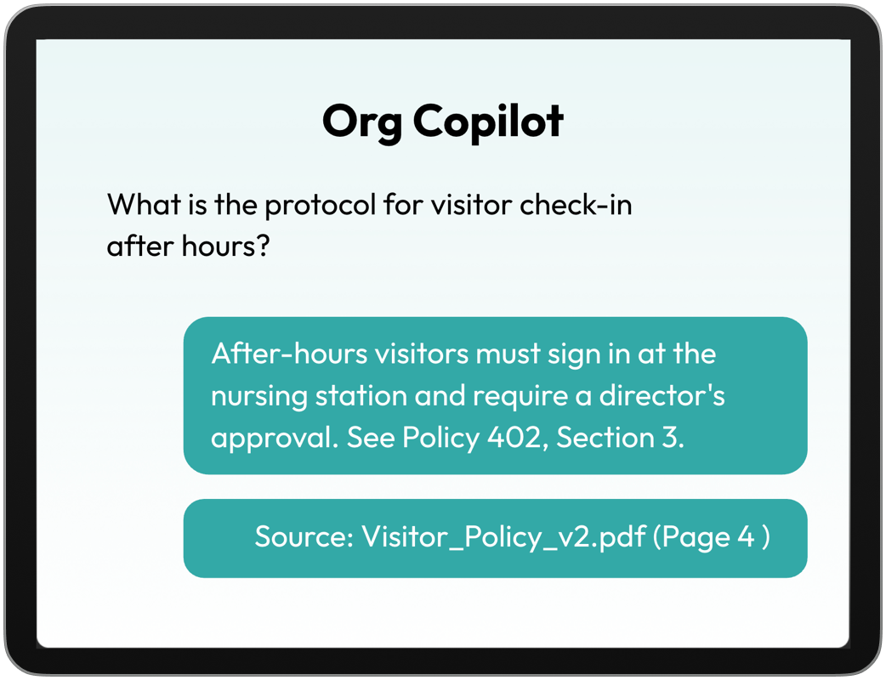
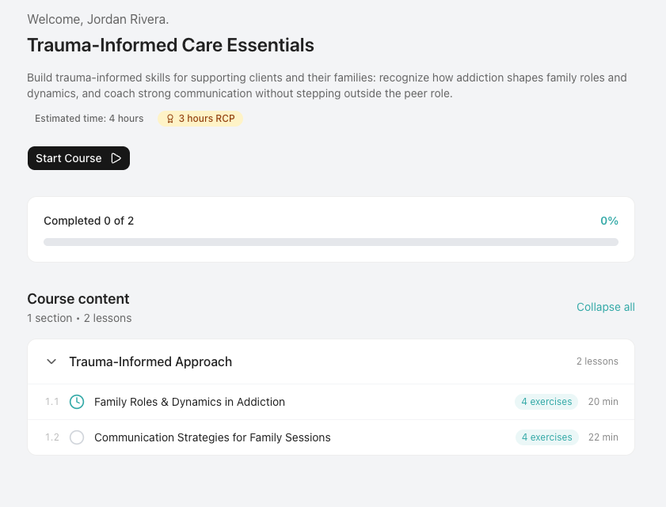

Slide 01
Real-world training for Peers and BHTs before the real world tests them.
A purpose-built training environment for the Radford facility. Two phases. Live in 8 weeks.
Platform Overview
Start here.
A quick walk-through of the platform before we get into the details.
Phase 1 Summary
Three things. Eight weeks.
01
AI Copilot
Trained on your facility's policies and documents so staff can ask questions and get answers in Pyramid's language.
02
Custom Roleplays
Three scenarios built specifically for Peers and BHTs, with AI scoring and immediate feedback after each interaction.
03
Supervisor Intelligence
Daily email reports on staff engagement, completion, and coaching gaps.
Platform Layer 01
Staff get answers without waiting for a supervisor.
The copilot is grounded in Pyramid's actual documents: policies, rules, protocols, and clinical frameworks approved for use at the facility.
- Grounded in Pyramid's policies and approved content
- Supports staff during training and day-to-day questions
- Reduces repeat clarification work for supervisors

Platform Layer 02
Practice the hard conversations before they happen.
Three scenarios built specifically for Pyramid's Peers and BHTs.
- Trauma-informed client interactions
- Phone policy and facility rule communication
- Peer support and de-escalation
AI scores responses and gives immediate feedback. No supervisor required.

Platform Layer 03
Leadership sees what's happening without chasing it.
Daily email reports surfacing who's engaged, who's struggling, and where the gaps are.
Oversight
Completion and engagement across staff
Coaching signal
Repeated struggle points and common question themes
Continuous improvement
Refine training based on what staff actually need
Phase 1 Scope
What's included, what's not, and the timeline.
Included deliverables
- AI copilot trained on Pyramid's RAG documents
- Three custom roleplay scenarios
- Supervisor intelligence via email reports
- Assessments and reporting
Explicit exclusions
- Deep EMR integrations
- Unlimited content conversion
- Enterprise-wide workflow changes
Timeline
8 weeks
From kickoff to Phase 1 launch
Phase 2
A full learning environment when you're ready.
Once Phase 1 is validated, we build out a structured LMS - interactive modules, expanded roleplay library, and full reporting.
Scope and timeline TBD based on requirements.
Next Steps
Four steps from proposal to kickoff.
Confirm Phase 1 scope
Identify the three priority roleplay scenarios
Share facility documents for Copilot training
Approve and schedule kickoff